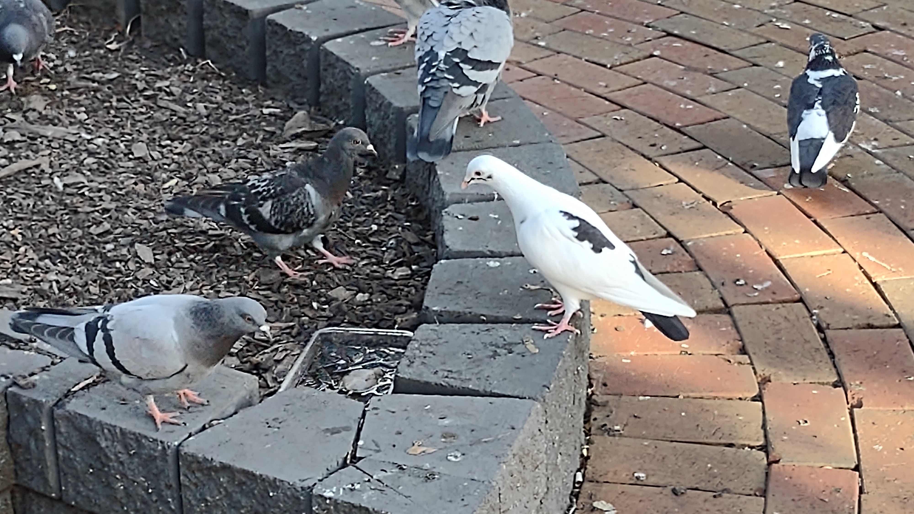

1. One member of the group create a github repo called 'git-flow-practice'
2. That group member will need to give access to the other group members
Settings -> Collaborators -> Add people
3. Everyone clone the repo
4. Repo owner create index.html and add a paragraph
5. Owner add and commit changes
6. Every member pull the changes
7. Every member create a branch, and make a change to index.html
8. Every member push their branch to origin and make a pull request to
main
9. Owner to merge changes in the PR
Here's a photo of pigeons as my edit.
